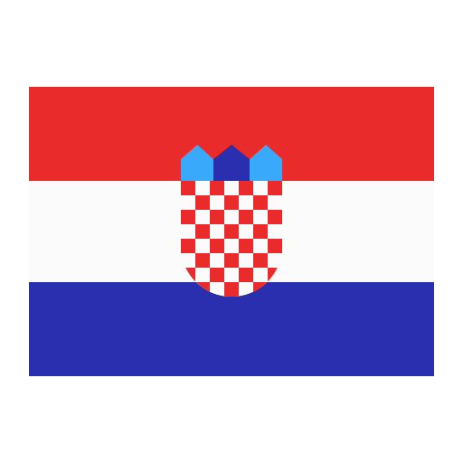

La selección de España ha sido una de las más exitosas en la
Eurocopa, ganando el torneo en 1964, 2008 y 2012. En 2008 y 2012,
lograron un impresionante bicampeonato, destacándose por su estilo
de juego basado en la posesión y el "tiki-taka". España también fue
subcampeona en 1984 y ha sido una competidora constante en las fases
finales del torneo. Con su rica historia y talento continuo, España
sigue siendo una potencia en el fútbol europeo.

Croacia
La selección de Croacia ha sido una participante regular en la
Eurocopa desde su debut en 1996. Su mejor actuación fue en 1996 y
2008, cuando alcanzaron los cuartos de final. En 2016 y 2020,
Croacia también mostró su competitividad llegando a la fase de
eliminatorias. Con jugadores talentosos y una fuerte tradición
futbolística, Croacia continúa siendo un contendiente serio en el
fútbol europeo, buscando mejorar sus logros en futuras ediciones.
Italia
La selección de Italia ha tenido un éxito considerable en la
Eurocopa, ganando el torneo en 1968 y nuevamente en 2020, cuando
derrotaron a Inglaterra en la final. Italia también fue subcampeona
en 2000 y 2012, demostrando su consistencia en el escenario europeo.
Con su enfoque táctico y defensivo característico, Italia ha
mantenido una presencia formidable en el fútbol europeo y sigue
siendo un equipo a tener en cuenta en cada torneo.
Albania
La selección de Albania hizo su debut en la Eurocopa en 2016,
logrando una histórica clasificación a la fase de grupos. Aunque no
avanzaron más allá de esta etapa, su participación marcó un hito
importante en la historia del fútbol albanés. Albania continúa
desarrollando su programa futbolístico y busca volver a competir en
futuras ediciones de la Eurocopa, aspirando a lograr mayores éxitos
y reconocimiento en el escenario europeo.